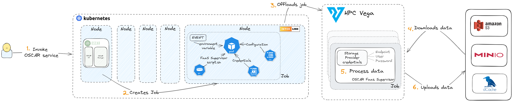

Integration with interLink
interLink is an open-source development that aims to provide an abstraction for executing a Kubernetes pod on any remote resource capable of managing a Container execution lifecycle.
OSCAR uses the Kubernetes Virtual Node to translate a job request from the Kubernetes pod into a remote call. We have been using Interlink to interact with an HPC cluster. For more infomation check the interLink landing page.

Installation and use of Interlink Node in OSCAR cluster
The cluster Kubernetes must have at least one virtual kubelet node. Those nodes will have tagged as type=virtual-kubelet. So, follow these steps to add the Virtual node to the Kubernetes cluster. OSCAR detects these nodes by itself.
Once the Virtual node and OSCAR are installed correctly, you use this node by adding the name of the virtual node in the InterLinkNodeName variable.
Otherwise, to use a normal node of the Kubernetes cluster, leave it blank ""
Annotations, restrictions, and other things to keep in mind
-
The OSCAR services annotations persist in the virtual node and affect the behavior of the offloaded jobs.
-
The memory and CPU defined in the OSCAR services field do not affect the offloaded job.
-
To request resources in the offloaded job, use the slurm flags
slurm-job.vk.io/flags(--job-name,--time=02:30:00,--cpus-per-task,--nodes,--mem). For example, you can mount a system folder in an HPC cluster with the key annotationjob.vk.io/singularity-mountsand value pattern"--bind <outside-container>:<inside-container>". The offload jobs are executed in a remote HPC cluster. So, a persistent volume claim cannot be mounted. Another example is the annotationjob.vk.io/pre-exec, which will execute a command before each execution. -
Any environment variable with a special character could create an error in the translation between the virtual node and the remote job. As a good practice, pass the environment variable encode in Base64 and decode it inside the execution of the script.
Please note that interLink uses singularity to run a container with these characteristics:
- You must reference the image container as singularity pattern
docker://ghcr.io/intertwin-eu/itwinai:0.0.1-3dgan-0.2. Once the image is pulled, the image can be referenced by path<path-of-container>/itwinaiv6.sif. - Your script will not run as a privileged user in the container. Therefore, you cannot write in the regular file system. Use the
/tmpfolder. - The working directory is not the same in the container. Therefore, use absolute paths.
The support for interLink was integrated in the context of the interTwin project, with support from Istituto Nazionale di Fisica Nucleare - INFN, who developed interLink, and CERN, who provided the development of itwinai, used as a platform for advanced AI/ML workflows in digital twin applications and a use case. Special thanks to the IZUM Center in Slovenia for providing access to the HPC Vega supercomputing facility to perform the testing.